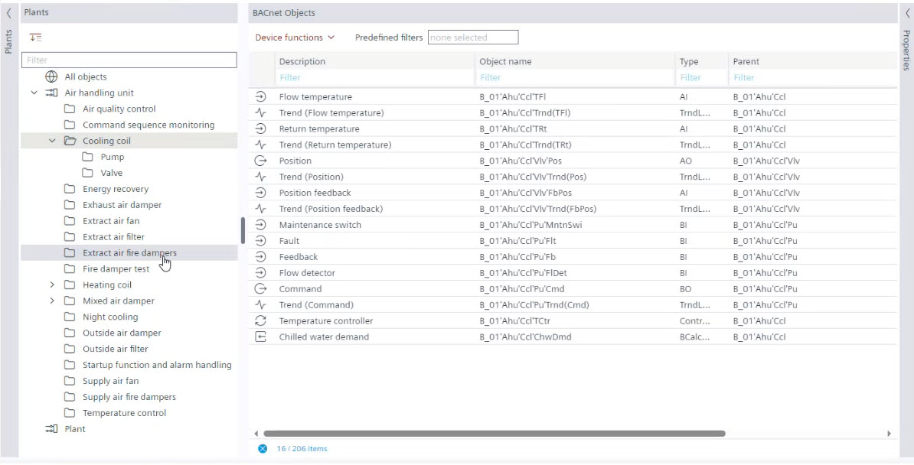
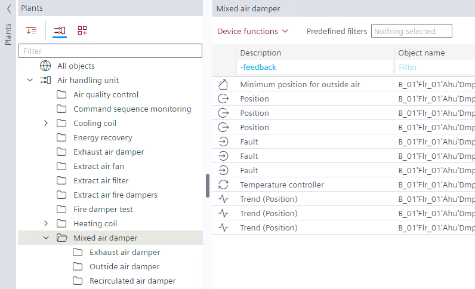

在“工程”选项卡中设置表过滤器
- Go to Building > Building structure.
- Right-click the device and select Go to engineering.
- Open the I/O Configuration/Modbus/M-bus/PL-Link/BACnet References/BACnet objects task.

以下所有过滤器都可以组合。
Using multiple filters
多个过滤器支持快速有效地查找对象或数据点。通过使用额外的过滤条件，搜索结果的范围进一步缩小。
- Using Plants navigation view filter
- In the Plants navigation view, select the plant or folder to narrow down the search for objects.
- The object list shows all data points of the selected folder.
- The displayed objects are counted at the bottom.
- In the BACnet objects tab, under Plants navigation view, select All objects to show all BACnet objects again.

过滤条件不区分大小写。
过滤器设置不与项目一起保存。当项目关闭并重新打开时，过滤器将恢复为默认值。
- Using column fields filter
- Enter a text in one or more column fields.
- The filter is immediately active.
- The active filter entries are colored blue.
- Use – to reduce the displayed objects, for example, -feedback in the Description field.

Filter rules within a text field | |
Filter | Description |
反馈 | 显示带有“反馈”一词的对象。 |
反馈趋势 | 显示带有“反馈”或“趋势”字样的对象。 |
+反馈趋势 | 显示带有“反馈”和“趋势”字样的对象。 |
-反馈趋势 | 显示既不包含“反馈”也不包含“趋势”字样的对象。 |
- | 仅显示空字段。 |
+ | 将显示该特定列中存在的值。 |
过滤器适用于表中的列Properties观也。
单词的顺序不影响显示的结果。例如，您可以输入“反馈趋势”或“趋势反馈”。
Clearing all filters
- Select .
该选项仅对表过滤器启用，对树视图不启用，例如，网络树Modbus编辑器或在Plants导航视图。
过滤器不启用此选项Properties看法。
此选项仅适用于 BACnet 对象选项卡。
Online engineering filters
- Go to Engineering.
- For example, open the BACnet objects task and go online.
- Set filters in the following columns:
- Value/Unit
- Commissioning